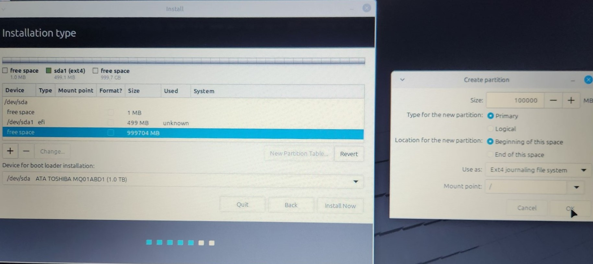
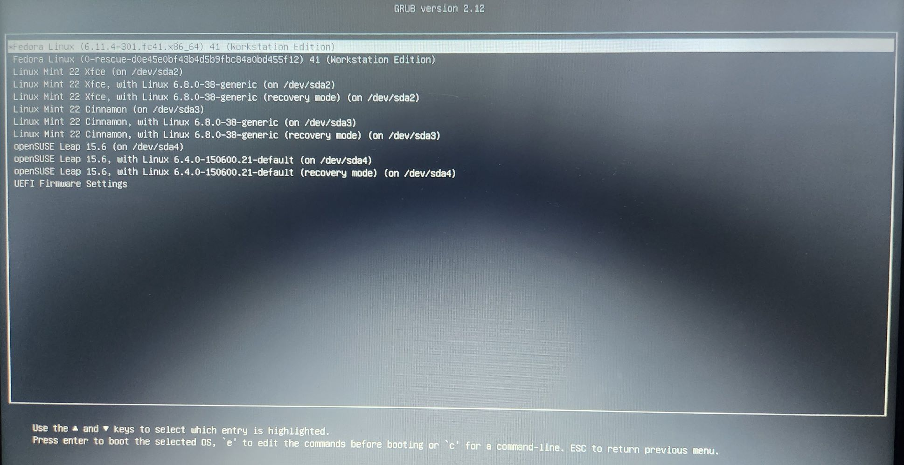

Welcome to my project page documenting the performance comparison of Four Linux distributions and the Creation of my First Website!
On this Website I will be detailing the steps I took towards completing my final project for CIS 100. I will be Comparing the performance of multiple Linux Distros on a single PC while also creating a website (this one) to document the process.
first things first, lets make a website. Establishing a good Git Workflow (adding, staging, and finalizing changes) is key to any project, as it allows you to keep track of changes and revert to previous versions if needed.
.png "this is the git bash i got from gitforwindows.org")
Here, I am creating a local (on my computer) directory (folder) with a text document containing, well, this; the raw information for a website. Once that's done, you initialize the folder as a Git repository using the git init command, creating a hidden .git folder that tracks changes in that folder you're in. After that, you link the folder to a remote repository on GitHub and upload your changes with a push command to GitHub. Finally, you can view that information as a website using GitHub Pages by enabling it in the repository settings.
Now let's get down to business. In this step we'll be taking a completely wiped out computer with nothing other than a bios on it, and using each distro's installer, partition a piece of the unused hard drive for each distro to use. In the end we will have four separate operating systems, on one computer. The four Distros I'll be Installing are:
The first step to all this is to get each Distro on a mountable medium, this will allow us to boot the computer (using the bios) from that medium and begin our installation process. The medium i used to mount each Distros ISO on was a flash drive; Tho other mediums (like CDs) can obviously be used.
Now we need to partition our EFI, this is a smaller piece of the harddrive that we will put each distros bootloader on. We can tell all the Distros to share this partition, so we only need to make it once.

Once we have our EFI partitioned, we can get started on the long but simple task of installing our distros. First we will put our flash drive into the computer and shut it down. Once we power up our pc into the bios, we can boot up through our flash drive, accessing each Distros Instillation program.

After partitioning a piece of our drive for the distro to use as its root, we just need to point the distro to where the EFI is so it can install its bootloader there. Once thats all said and done it will begin its instalation process and thats it! Now all thats left is to repeat the process until we have all the distros we would like to have on the PC.


If we did everything properly with pointing each distro to our one EFI partition, we should be able to access each distro when we boot up our computer, launching the bootloader. in our case, the GRUB 
We will be using the default distros system monitor that each distro provides to compair their performance while running an in-browser benchmark (Wirple Benchmark) to stress the hardware. I will also be giving a live demo of this process for one of the distributions as my presintation in class.
The Results:
Linux Mint Cinnamon
Fedora

OpenSUCE
Linux Mint Xfce


all in all the test goes through 4 diffrent benchmarks to stress the computer
Once the process is over, the Benchmark Pumps out a score:
Given the results as well as my own observations during the test, it was clear that both Linux Mint Xfce and OpenSUCE took the longest in the Cube test to drop below 10 FPS. Many factors may have also played a role in the results, like taking a Screenshot needing to be a program that wants to open during each test, clearly affecting the results. In the end, I still believe the lighter weight distros like Linux Mint Xfce and OpenSUCE "felt" the fastest, and the project was a sucess as my old piece of junk laptop actually made it through the experiment.